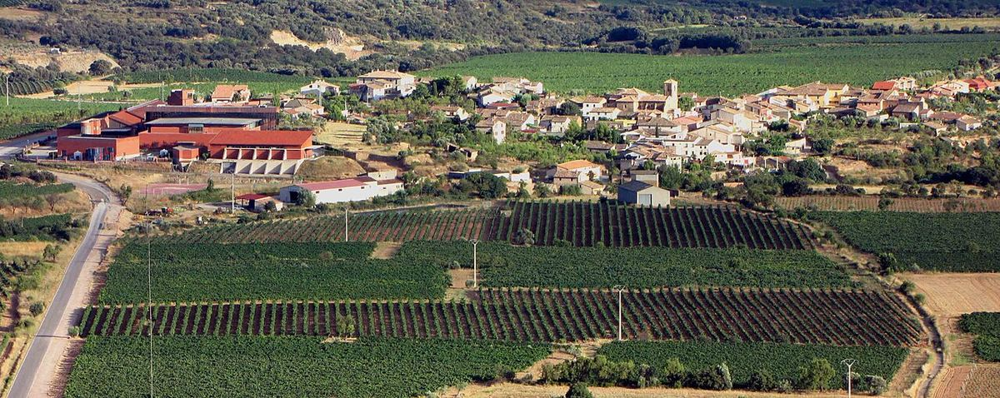

BLANCO
Somontano es una denominación de origen de la provincia de Huesca, al pie de los Pirineos, con Barbastro como centro. Combina variedades autóctonas como Moristel y Parraleta con un amplio abanico de uvas internacionales.

El nombre Somontano significa «al pie del monte» y describe la situación de la comarca, en el piedemonte de las sierras prepirenaicas. La viticultura de la zona se remonta, al menos, a época romana y se consolidó en la Edad Media con los monasterios. En el siglo XIX, tras la llegada de la filoxera a Francia, los vinos del Somontano se vendieron en el mercado francés, y se establecieron vínculos con la región de Burdeos que dejaron huella en las técnicas de elaboración. Después de un periodo de declive, la creación de la denominación de origen en la década de 1980 y la fundación de nuevas bodegas, junto a la cooperativa local, renovaron profundamente la producción y dieron a la comarca una imagen moderna.
La denominación se sitúa en el centro de la provincia de Huesca, en torno a la ciudad de Barbastro, en las cuencas de ríos como el Vero y el Cinca. Los Pirineos, visibles al norte, protegen la zona de los vientos fríos. El clima es continental con influencia de la montaña: inviernos fríos, veranos cálidos, lluvias moderadas y una acusada diferencia de temperatura entre el día y la noche, que favorece la conservación de la acidez y los aromas, sobre todo en los blancos. Los viñedos se reparten entre llanos, laderas y terrazas a distintas altitudes.
Predominan los suelos pardos calizos, de textura franca a arcillosa, en general poco fértiles y bien drenados, con gravas y cantos rodados en las terrazas fluviales.
Junto a las variedades autóctonas, como las tintas Moristel y Parraleta y la blanca Alcañón, el Somontano cultiva un amplio abanico de variedades: Tempranillo, Garnacha, Cabernet Sauvignon, Merlot, Syrah y Pinot Noir entre las tintas, y Chardonnay, Macabeo, Garnacha Blanca, Gewürztraminer, Riesling y Sauvignon Blanc entre las blancas. Esta diversidad se traduce en vinos monovarietales y en coupages que combinan uvas locales e internacionales. La Gewürztraminer y la Chardonnay han dado algunos de los blancos más conocidos de la zona, mientras que los tintos van desde vinos jóvenes y frutales hasta otros de crianza en barrica.
La denominación ampara blancos, rosados y tintos, además de vinos con las menciones tradicionales de Crianza, Reserva y Gran Reserva. En los últimos años ha crecido el interés por recuperar los viñedos viejos de Moristel y Parraleta y por elaborar vinos que expresen el carácter propio de la comarca. Los rosados, a menudo de Cabernet Sauvignon, Merlot o Garnacha, constituyen también una parte relevante de la producción.